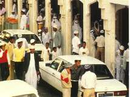

Plusiques vagues d'immigration, plus ou moins longue ont façonné l'image de l'islam pluriel de la Réunion. Les trois grands groupes présentés ici séparés pour montrer la diversité plus qu'une réparésentativité. Les musulmans de la Réunion sont proportionnelement peu nombreux mais parce que c'est la religion pratiqué par une population parfois riche et influante, elle est un trait culturel local marquant.
Biens qu'on les appelle zarabes, les premiers musulmans à s'être installés à la Réunion sont originaires d'Inde, du Gujerat (Gujarãt) plus précisément, l'état situé au nord ouest, entre Bombay et l'actuelle frontière pakistanaise. Ils sont arrivés dès les premiers temps de l'engagement, en même temps que les Chinois et les Indiens de la côte des Malabars (qui eux viennent du sud est du sous-continent). Les zarabes sont musulmans de confession sunnite et de rite hanafite.
 Après deux ou trois génération de présence, ils ont commencé prospérer généralement en faisant du commerce. Leur influence dans la vie sociale et sur la culture de l'île s'est renforcée. La mosquée Noor-e-Islam (Lumière de l'Islam) de Saint-Denis (photo ci-contre) a été innaugurée en novembre 1905, juste avant la séparation de l'Église l'État ( décembre 1905 ). C'est la plus ancienne mosquée de France et elle a été financée par un groupe de fidèles qui étaient commerçants.
Un autre groupe musulman originaire du Gujerat est arrivé à la Réunion bien plus tard, à partir de 1972, chassés de Madagascar par la situation politique dans la grande île. Ces Indiens sont appelés karanes, ils sont en majorité de confession chiites et pratiquent la plupart du temps un culte domestique.
Le groupe musulman le plus récent est celui constitué par la communauté comorienne. Les comoriens viennent depuis les années 70 et encore aujourd'hui à la Réunion pour y trouver un travail. Il sont sunnites, de rite chaféite.
Biens que d'obédiences diverses, les musulmans de la Réunion se côtoient sereinement. À eux tous, ils sont très minoritaires mais le groupe des musulmans sur l'île a acquis une importance indiscutable dans le tissus économique réunionnais ce qui leur vaut reconnaissance et respect.